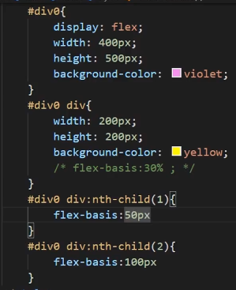
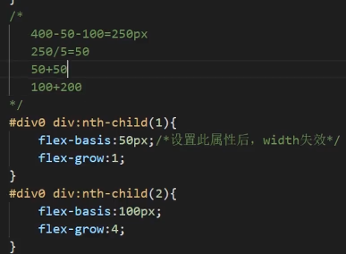
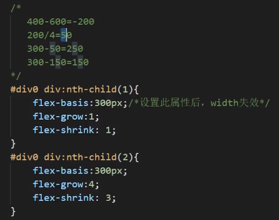
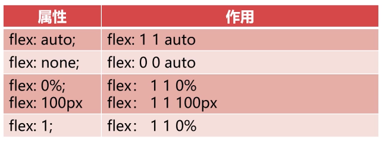

- 响应式设计的原则
- 移动优先：移动端优先
- 渐进增强：充分发挥硬件设备的最大功能
- 具体实践原则 https://zhuanlan.zhihu.com/p/74020058
- 响应式布局的实现
- CSS3-Media Query (最简单）
- 原生JS (成本高，不推荐)
- 第三方开源框架
- 特点
- 重依赖CSS
- 一套方案，处处运行
- 思路：使用%或rem为单位
CSS3-Media Query
- 常见属性
device-width,device-height屏幕宽高width,height渲染窗口宽高orientation设备方向resolution设备分辨率- （根据以上属性决定给用户呈现怎样的页面）
- 示例
- 缩小到一定宽度后背景色从蓝色变成红色
// link.css body{background:red;}
<html> <head> <link type="text/css" rel="stylesheet" href="reacting.css" media="only screen and (max-width:600px)" /> <style> @media screen and (min-width:600px){ body{background:blue} } </style> </head> <body> </body> </html>
Bootstrap
- https://getbootstrap.com/
- 对新手友好(?)，基本上去官网复制粘贴就好
- 前端工程师不太喜欢，因为命名混乱，有很多需要记忆的语法，如果对CSS熟悉，还不如手写CSS快
- 还剩最后一节实践没看，要上手的时候看
Flex
- div属性
- 在父容器中设置：
display:flex;
对齐和排列属性
flex-direction： 决定子元素的排列方式
- value: 默认
row,row-reverse,column,column-reverse - 在父元素style设置
display:flex;flex-direction=value; - 如果父元素主轴长度大于子元素的和：默认剩余的空间剩下，可以通过设置平均分配
- 如果父元素主轴长度小于子元素的和：压缩，平均分配
若想要换行：flex-wrap
nowrap默认，不换行不换列wrap换wrap-reverse以相反的方向换（123456789 -> 789456123)
flex-flow：flex-direction和flex-wrap的简写
flex-flow: row wrap;
justify-content：存在剩余空间时，设置间距的方式
flex-start: 元素往开头靠拢flex-endcenterspace-between: 均分，两边不留空space-around: 均分，两边留(两两之间)一半的空- 子元素margin还是会生效的
align-items ：cross axis的对齐方式
flex-startflex-endcenter
align-content ：与align-items相似，把多行子元素当一个整体
flex-startflex-endcenterspace-betweenspace-around
- 伸缩比例属性：
- 可以写在父元素同意设置，也可以对子元素分别设置
flex-basis: 设置弹性盒伸缩基准值- px, %, em
- 设置后对应width,height失效
逐个子元素设置的方法：
 flex-grow扩展比率- 当不足以填满时
分别给子元素设置，值的单位是份
 flex-shrink缩小比率- 子元素太宽了……
- 0是不允许缩小
 flex: 简写flex: grow shrink basis;flex: 4 3 300px;- 特殊写法：
 - 1 1的情况下，第三个值就不重要了
使用rem字体自适应
- 实现
- script中：
- 320是iPhone5的宽度
var c=()=>{ // 获取设备宽度 let base = 16; let w = document.documentElement.clientWidth; let n = (base*(w/320))>40?40+"px":(base*(w/320)+"px"); // base是基准大小 document.documentElement.style.fontSize=n; } // 加载或改变尺寸时加载c window.addEventListener("load", c); window.addEventListener("resize", c);
也可以用媒体查询+rem
自适应布局
- 一种方式：移动一个html, PC一个html
- 跟上面响应式的实现方式类似
- 已弃用
- 局部自适应
- css，使用flex布局，设置伸缩比例
- @meida媒体查询
响应式布局的实现
- 1. 写多个css，根据情况不同引用
- 见tls test layout1
- 2. 写一个css
- 用js
- 用media
rem弹性布局
加到响应式布局里了